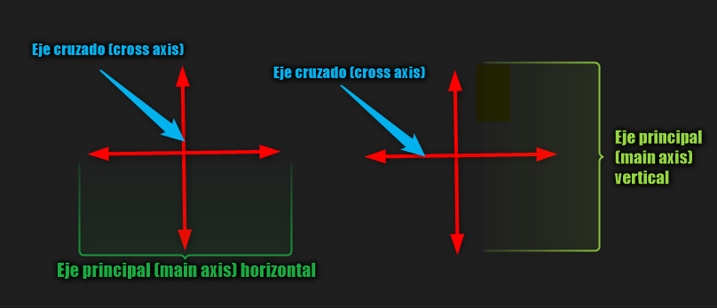
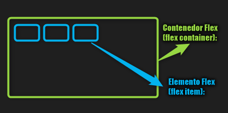
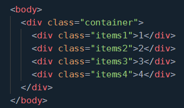

Aunque con lo aprendido anteriormente en cuanto a display, el tipo de display flexbox, permite hacer ajustes de
manera mas dinamica y flexible. Es posible ajustar el tamaño de los elementos de forma mas facil y sin importar
el tamaño del elemento contenedor
En display flex es importante conocer dos conceptos principales:
Flex y grid se comportan como block, por eso tambien existe in-line flex e in-line grid
Se refiere a el eje en el que se ubican los elementos dentro de su contenedor o elemento padre Contenedor Flex (flex container)
puede ser horizontal o vertical
Es el eje perpendicular al eje principal.
Es el elemento al que se le aplica display: flex, es decir el elemento contenedor
Elemento Flex (flex item): Son los hijos directos del contenedor flex, o los que estan dentro del flex container
Ahora te presento un HTML, CSS y imagen en el browser de e un container y sus elementos:
Permite cambiar la direccion en que los elementos se alinean y tiene varios valores
row (por defecto): Es la posicion por defecto, los elementos hijos se alinean de izquierda a derecha
row-reverse: Los elementos hijos se alinean en fila pero de izquierda a derecha
column: Los elementos hijos se alinean en columnas de arriba a abajo
column-reverse: Los elementos hijos se alinean en columna, pero ahora de abajo hacia arriba
Puedes seleccionar en el menu desplegable cada uno de los anteriores valores de la propiedad, para
ver como se comportan
Se refiere a la fila y como vimos en el ejemplo anterior se acomodan de izquiera a derecha o inverso con reverse
Se refiere a las columnas y funciona de arriba hacia abajo por defecto o inverso si usamos row-reverse